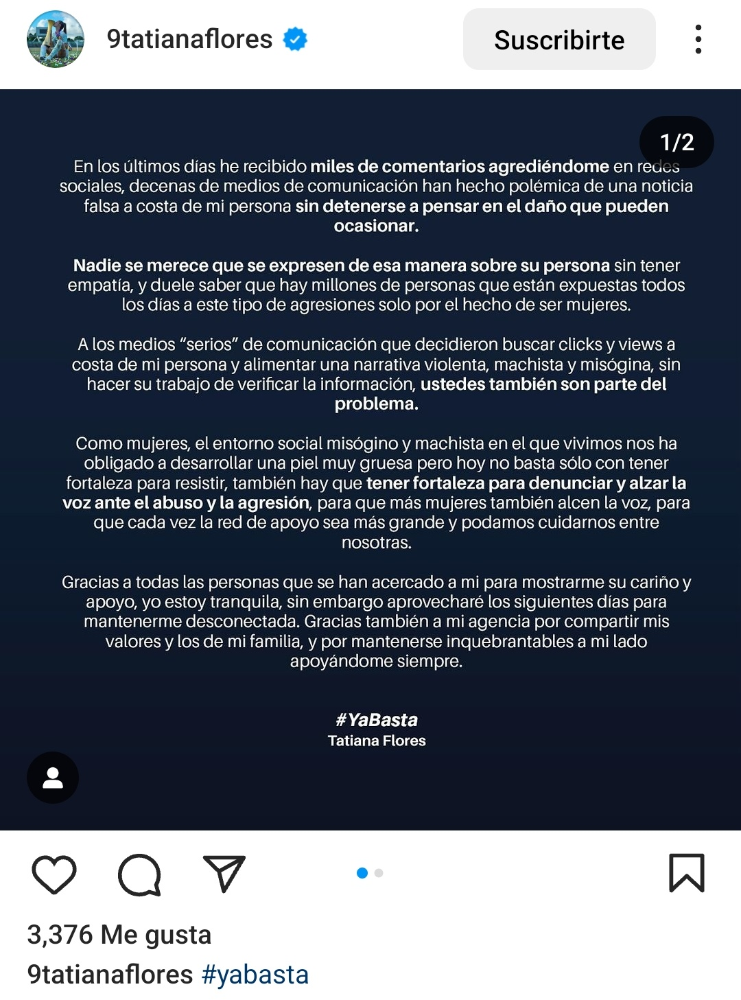
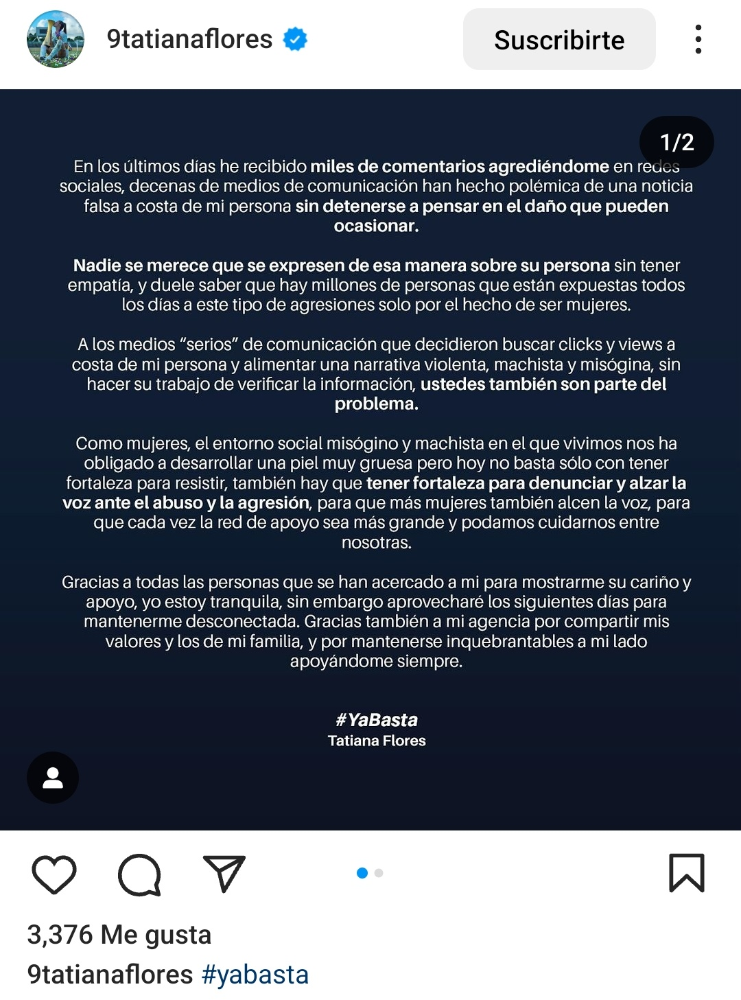

Liga MX Femenil
Tatiana Flores emite cominucado sobre las notas falsas que han circulado en los últimos días: "Ya basta"
La delantera de la Selección Mexicana Femenil juvenil reclama por los rumores que la señalan en el despido de Siboldi de Tigres.
 

Después de la salida de Robert Dante
Siboldi de la dirección técnica de Tigres,
comenzaron rumores que lo vinculaban con Tatiana Flores, juvenil delantera de
Tigres Femenil y de la Selección Mexicana Femenil.
Sin embargo, ha sido la atacante la que ha alzado la voz para protestar por este tipo de
rumores y para pedir que paren este tipo de
noticias que no hacen más que herir y violentar a las mujeres.
De este modo, Tati, quien es conocida también como hermana de Marcelo Flores, extremo de
Tigres, así como de Silvana Flores, de Rayadas del Monterrey,
ha querido dejar atrás lo que se ha dicho y que inexplicablemente la comenzaron a vincular con
Siboldi y un tema del que desconoce y que asegura que le es
ajeno.
Tatiana Flores rechaza estar involucrada en salida de Siboldi de Tiges
De esta manera, la ex artillera del Chelsea Women, de Inglaterra, y Real Oviedo Femenino,
de España, ha querido terminar con una polémica innecesaria que
la vinculaba con lo ocurrido en Tigres de la Universidad Autónoma de Nuevo León (UANL).
"A los medios 'serios' de comunicación que decidieron buscar clics y views a costa de mi persona
y alimentar la narrativa violenta, machista y misógina,
sin hacer su trabajo de verificar la información, ustedes también son parte del problema...
Como mujeres, el entorno social misógino y machista en el que
vivimos nos ha obligado a desarrollar una piel muy gruesa, pero hoy no basta con
tener fortaleza para resistir, también hay que tener fortaleza para denunciar
y alzar la voz ante el abuso y la agresión", se puede leer en parte del comunicado de la
internacional mexicana nacida en Canadá y actual elemento de Tigres Femenil.